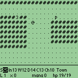
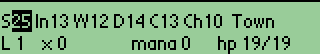
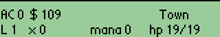
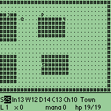
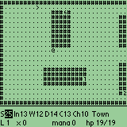
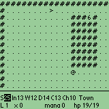

Playing kMoria
all about the main screen
all about the main screen
When you start the application you will first have to generate a character.
Then you will start out in the town. If you are not familiar with Moria or want a refresher, here is a very brief intro to what you will see. When you are done, continue with how to play.
When you finish creating your character, you will see a screen split into two parts. The main part represents a portion of the dungeon level you're on. The bottom part contains your status information and/or recent messages.

To make more of the dungeon visible, your status information has been compacted. The top line displays either your six stats, or your armor class and cash. (You can write a "!" in Graffiti to toggle between the two.) The bottom line displays your experience level, total experience points, mana, and maximum/current hit points.


Stats: These are the standard (S)trength, (In)telligence, (W)isdom, (D)exterity, (C)onstitution, and (Ch)arisma. They were generated randomly initially, then modified somewhat by your choices in character creation. It is possible to have exceptional, e.g. 18/99, values. A value of 18/25 (for example) is shown as reverse-video 25.
Armor class (AC): Higher is better. Put on some armor in the inventory screen.
Cash ($): You can use this to buy things in the stores.
Current depth ("50 feet"): This shows what dungeon level you are on.
Experience level (L), experience points (x): You get points for killing monsters, depending on the type of monster and your current level of experience. You do not get points for killing town inhabitants, even if they were asking for it.
Mana: You need to have mana to use a spell or prayer. It will regenerate slowly after you use it.
Hit points (hp): The current value is on the right. It will regenerate up to the maximum value (on the left). If your current hit points drop to 0 or below, you die.
You are represented by an at-sign "@". You start out in the town, which has various stores as well as a staircase leading into the dungeon. The town also contains various uncongenial inhabitants. To enter a store, just move on top of its numbered doorway. (I will explain how to move in the next section.) To enter the dungeon, move onto its entrance and write > to descend the stairs; be sure to wield a light source so that you can find your way out again.
The dungeon levels in Moria tend to be large. Be patient as a new level is generated. You may wish to change to the smaller font so that you can see more. This game does not have persistent levels; if you descend from level A to level B and then ascend to A again, it will be a new fully-stocked random map.



When you are in the dungeon, walls are "#" and lighted tiles are ".". You may see monsters, represented by letters of the alphabet. You can attack them by walking into them.
Items: In your wanderings you will also encounter items that you can pick up; these are represented by various symbols such as ! and ?; you pick them up by walking on them, and you can use them from your inventory screen.
To find out more about your surroundings: The What's that command will identify any letter, symbol, or number that you tap on, and (if it is a type of monster) will recall what you have learned so far about it. The look command lets you choose a direction to look in, and will list any interesting things you see there. Either command will also give you access to the "monster memory": kMoria remembers, from game to game, what your characters have learned about particular monsters (did it kill you, does it breathe fire, is it vulnerable to something, how many experience points is it worth to you now, etc).
Doors: You will sometimes encounter closed doors "+" which can be opened or, if it is jammed shut, you can try to force it open bodily. It may take several tries to open a locked door or force a door that is stuck. If you want to wedge a door shut to delay pursuit, you can spike it with iron spikes, assuming that you are carrying some. Many doors in these mines are cunningly concealed; if you think a door ought to exist in one of the eight squares adjacent to you, you can search for it; again, this may take several tries. Open doors "'" can of course be closed again, unless forced and broken.
Stairs: Down staircases > and up staircases < are conveniently represented by the same symbol that you must write to ascend or descend them.
Digging: You may see a vein of valuable metal "$" embedded in a wall. You can try to dig this out. It will take a long time unless you are wielding a suitable mining implement such as a pick or shovel. Some kinds of rock are harder to dig through than others; there is a preference that will draw the easier minerals as "%".
Traps: From time to time you may run into a trap "^". There are various kinds of traps, but I'll let you find out about them on your own. You can find traps by searching, and you can also attempt to disarm a trap.
To alleviate the tedium, some of these commands can be auto-repeated ("dig until you are done or are interrupted by something"). There is also a "do whatever I just did again" command.
Ok, that's the brief introduction. On to how to play.